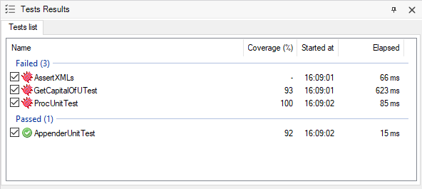

This feature is usefull to see what coverage a test does of his called objects for a particular test execution. RequirementsGeneXus 16 Upgrade 8 or above is required to use this feature. Set upTo use it, the first thing to do is enable Code Coverage for your environment. See this page to see how to do this. Once it's enabled, the test objects may need to be rebuilt. You can perform a "Rebuild All Tests" operation under "Test" menu to achieve that. Test Coverage informationFinally you can run the tests and, after the execution is finished, you should see something like the image above.  Coverage percentage shown in column Coverage (%) is calculated as follows: Given a test, coverage information about all it's called objects (Procedures and Data Providers) is summarized and calculated taking into account only direct relative objects (the ones called directly by the test). When a test doesn't call any other testable object, a minus sign is shown (e.g. test AssertXMLs in previous image). ExampleThere is a test X that calls to procedure A and data provider B. If during execution of test X, 8 of 10 lines of object A and 2 of 10 lines of object B were executed, the coverage for that test for that execution will be 50% ( ((8 + 2) /(10 + 10)) * 100); regardless of any other object that could be called by objects A or B.
Note: In case you want to view even more details about coverage, you always can open Code Coverage window and load the file from file system. Note that the path of the generated code coverage file by GXtest is logged in GeneXus IDE log. |
| Backlinks | |
| Changelog GXtest | Code Coverage |
| Toc:GXtest v4 |